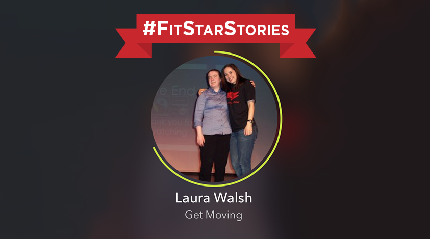
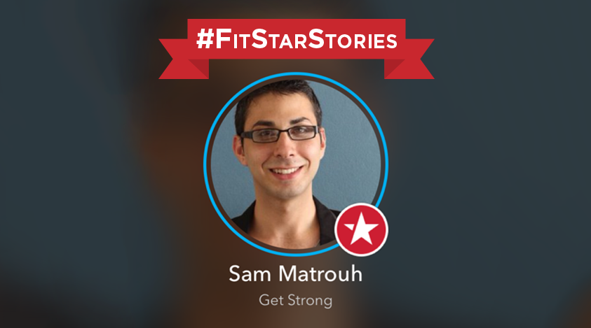

-
6 · 10 · 2014 | Fitness
The Four Fitness and Health Maxims: #3 Recovery
 By Jeff Angus – FitStar Contributor Continuing with the Health Maxims series, this week I will be covering Recovery, a vital step to address in your fitness journey. Make sure to check out the first two: Specificity and Progressive Overload to help you achieve your goals the smart and healthy way. Adequate...
By Jeff Angus – FitStar Contributor Continuing with the Health Maxims series, this week I will be covering Recovery, a vital step to address in your fitness journey. Make sure to check out the first two: Specificity and Progressive Overload to help you achieve your goals the smart and healthy way. Adequate...
Keep Reading
-
6 · 9 · 2014 | Inspiration
FitStar Stories: Laura Walsh
 Laura began using FitStar four months ago when she learned about it during her PE class. She has since traded in 11 pounds for a lot more confidence! Here are five facts you need to know about FitStar: Laura Walsh. 1) What’s your name and where do you live? Hi,...
Keep Reading
-
6 · 8 · 2014 | Fuel
4 Cooking Mistakes You Learned From Your Parents (and How to Fix Them)
 By Darya Rose – FitStar Advisor Mistake #1: Overcooking By far the most common reason food is ruined is overcooking. When vegetables are cooked too long they lose their vibrant color, sweet flavor and crisp texture, making them far less appealing. Remember that most vegetables can be eaten raw, so...
By Darya Rose – FitStar Advisor Mistake #1: Overcooking By far the most common reason food is ruined is overcooking. When vegetables are cooked too long they lose their vibrant color, sweet flavor and crisp texture, making them far less appealing. Remember that most vegetables can be eaten raw, so...
Keep Reading
-
6 · 6 · 2014 | FitStar News, Inspiration
A Year of FitStar
 Hi All – Hard to believe, but it has been a year since we officially launched the first version of FitStar. It started with a simple idea: by making fitness more convenient, inspirational and personal, we could do a better job of getting people moving — whatever their current state...
Hi All – Hard to believe, but it has been a year since we officially launched the first version of FitStar. It started with a simple idea: by making fitness more convenient, inspirational and personal, we could do a better job of getting people moving — whatever their current state...
Keep Reading
-
6 · 5 · 2014 | Fuel, Healthy Lifestyle
Weekly Wellness Links
 This week in wellness links: healthy grilling tips, 21 ways to stay healthy when you have a desk job, boosting your metabolism and a berry almond smoothie that’s perfect for breakfast. 1. Dust off the grill because it’s barbecue season! Health.com offers six ways to have a healthier barbecue. 2. Stuck at...
This week in wellness links: healthy grilling tips, 21 ways to stay healthy when you have a desk job, boosting your metabolism and a berry almond smoothie that’s perfect for breakfast. 1. Dust off the grill because it’s barbecue season! Health.com offers six ways to have a healthier barbecue. 2. Stuck at...
Keep Reading
-
6 · 4 · 2014 | Fuel
Healthy Snacks For After Your Workout
By Darya Rose – FitStar Advisor “When I work out at the gym, I am there for a couple of hours and by the end of the first hour, I am still energized but start getting hungry. I read your article on packing food for lunch but wanted to specifically ask if...
Keep Reading
-
6 · 3 · 2014 | Fitness
The Four Fitness and Health Maxims: #2 Progressive Overload
By Jeff Angus – FitStar Contributor This week I want to share another one of the Four Health Maxims that are vital to your fitness success: Progressive Overload. You can read about Specificity, the first one in this series here. And be sure to follow the FitStar Blog for other great...
Keep Reading
-
6 · 2 · 2014 | Inspiration
FitStar Stories: Sam Matrouh
 We heard about Sam’s “7 Day Challenge with FitStar” when he tweeted about it earlier this month. Being a shy and introverted person means he’s not as comfortable in the gym setting. We love that Sam gave FitStar a shot and asked him to share his experience. Spoiler alert: It’s been over 7...
Keep Reading
-
6 · 1 · 2014 | Fuel
Get the Most Nutrition from Your Vegetables
 By Lori Rice — FitStar Contributor Vegetables are the foundation of a healthy eating plan. Think about it. It doesn’t matter what eating style you follow – vegetarian, vegan, Paleo, gluten-free, low carbohydrate. While these plans may give a yay or nay to fruits, grains, dairy or meat, the one...
By Lori Rice — FitStar Contributor Vegetables are the foundation of a healthy eating plan. Think about it. It doesn’t matter what eating style you follow – vegetarian, vegan, Paleo, gluten-free, low carbohydrate. While these plans may give a yay or nay to fruits, grains, dairy or meat, the one...
Keep Reading